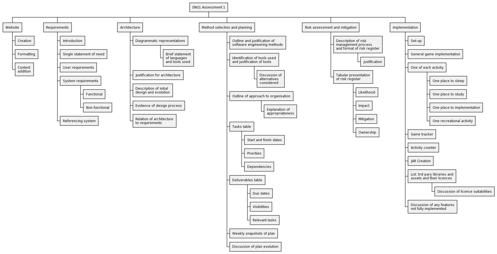

SKLOCH ENG1 Group Project
1. Breakdown of tasks

2. Ghantt charts by week
Week 1
Week 2
Week 3
3. Client interview Questions
-
Demographic
- What age range is the game for?
- Is the game targeted towards a certain gender?
- Is the game aimed at students or people in other occupations?
-
Design
- Is the game first or third person?
- Would the game be a top-down perspective or a side-on perspective?
- What would you like the playable character to look like? Should they be male or female?
- What should the game over screen look like?
- Do you have a theme or color scheme in mind, especially for menus and other UI elements?
-
Map
- Do you want the whole map to be visible at once or should the player follow a small portion of the map that the character is in?
- How accurately should the map depict Heslington, for example the buildings and their locations relative to each other?
- Should buildings be a generic style or should they accurately depict the buildings in real life?
- Which key landmarks do you want in the map?
- When at a location do you go inside the building or stay outside and do the activity?
- If they do go inside, should the building have its own map or just an overlay image of inside the building?
-
Game Menus
- Should the game have a main menu that is loaded when the game is launched?
- Are there any features/buttons that need to be present within this main menu (e.g leaderboard or high scores)?
- Does the user have to be able to pause, save or load a game?
- What should happen once the game is over? Should there be a player’s performance recap and then an option to return to the main menu?
- Should there be a checklist of activities that the player must complete each day?
-
Controls
- Is the game for desktop, console or mobile?
- How should the player control the character? How should the character move around the map (e.g. arrow keys, mouse)?
- Should the character be able to move around freely or follow a strict path?
-
Game Functionality
- Is the character forced to sleep when the time for the day runs out or can they choose not to if they have enough energy left?
- What should happen if the player doesn’t go and sleep in their dorm? Do they die? Is the game over? Do they fall asleep in the street? Do they automatically get teleported to their accommodation?
- Should there be people or objects around the game that can inhibit the player character?
- Should the game have a leaderboard or high scores?
- For the interactive locations, such as the computer science building and sport centre, what should the interactions consist of? For example should it be a mini game?
- Does moving around the map take up energy or just interacting with elements?
- How much energy should different activities consume?
- Would you like any additional status bars? (hunger, energy, happiness etc.)
- Should there be any ways to replenish energy in the game?
-
Sound
- Do you require the game to have any in-game music, if so do you have a style of music or specific soundtrack in mind?
- Do you require the game to have any sound effects, e.g when the character walks around or interacts with any objects?
-
Accessibility
- Are there any accessibility features you would like to see included in the game?
- Are there any additional requirements that you have that haven’t been discussed so far?
4. CRC cards